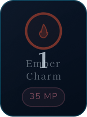
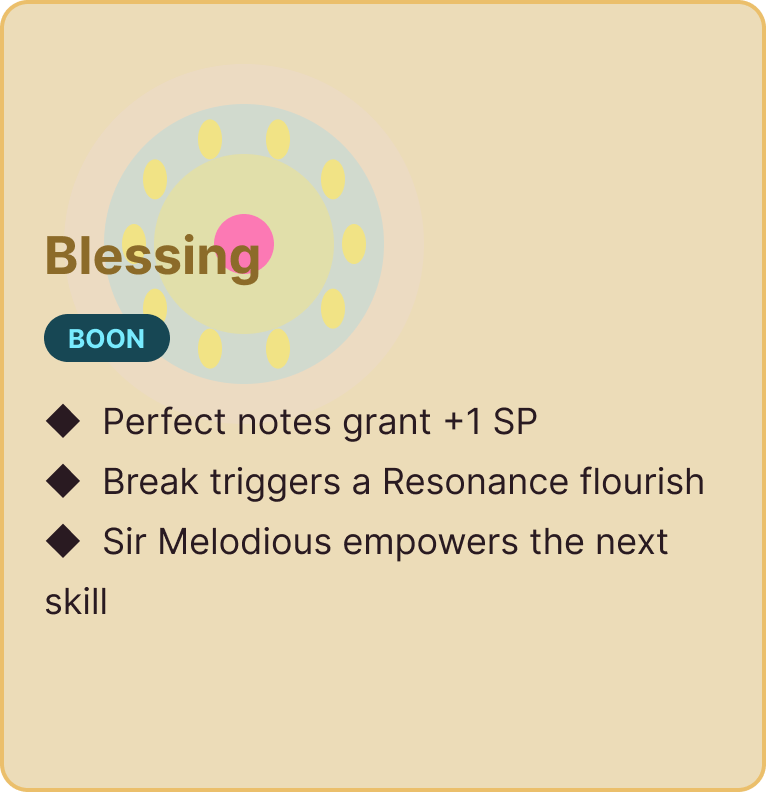
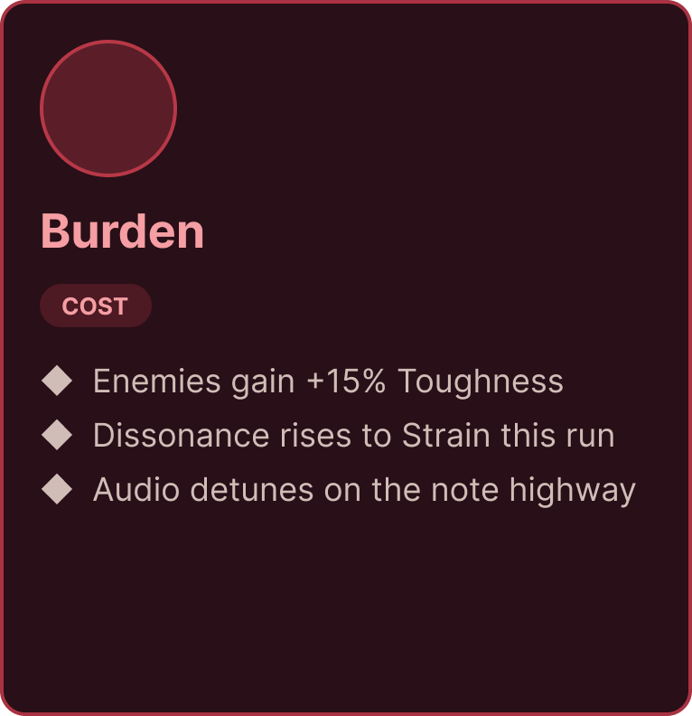

Sanctuary Dialogue
Player interacts with Morning Sir in the sanctuary. QuillScript interpreter manages narrative dialogue branching and typed terminal choices.
Melodia · 7-Stage Gameplay Loop
Editorial look-book detailing Melodia's 7-stage Persona-lite JRPG loop — linking sanctuary dialogue, seamless level travel, turn-based tactical combat, Harmonix rhythm timing enhancement, typed result resolution, and binary state serialization.
Core Gameplay Loop
Authored pathway linking narrative choices, seamless environment traversal, turn-based combat, rhythm timing deferral, terminal result branching, and disk serialization.
Player interacts with Morning Sir in the sanctuary. QuillScript interpreter manages narrative dialogue branching and typed terminal choices.
Transition trigger calls UMelodiaTravelSubsystem::SeamlessTravel to exit sanctuary and initiate background level loading into dreamstate traversal.
Exploration across the dreamstate traversal route. Player controls Melusina with responsive camera framing and input debouncing.
Encountering enemies initiates a seamless camera transition into tactical turn-based combat with party action-time queues.
Harmonix rhythm timing highway synchronizes note hit windows to the 128 BPM music clock, modulating damage multipliers upon skill execution.
Combat terminates returning a typed result enum (Victory, Defeat, Fled, Unavailable), triggering party vitality recalculation and status restoration.
Binary state serialized to disk with persistent checkpoint management, enforcing strict save locks during active combat encounters.
Combat Mechanics
Turn-based combat abilities designed for multi-character resonance and tactical combo execution.
Melusina casts a harmonic petal wave that applies the Harmonic Resonance status buff to all party members. Increases speed by 15% and primes party members for follow-up elemental finishers.
Morning Sir delivers a high-impact skybound strike. If the target or caster carries the Harmonic Resonance buff, the ability consumes the charges to inflict 2.5x conditional bonus damage and restore party vitality.
Audio Clock Synchronization
Harmonix rhythm layer integrating real-time note stream tracking and deferred damage multiplier calculations.
The rhythm engine integrates UMusicClockComponent loaded with the 128BPMarpeggiomelody_beatgrid beat map. When a player executes UseSkillWithRhythm(StockSkill), damage output is deferred until FinishSession() latches the PendingDamageMultiplier at the end of the note highway stream (~3.05s latch window). This prevents premature anim-notify resolution (which occurs at ~0.51s) from truncating player rhythm input.
| Timing Accuracy Tier | Timing Window (Delta) | Damage Multiplier | Resonance & Visual Feedback |
|---|---|---|---|
| Perfect | ± 45ms | 1.50x Damage | Grants 2x Harmonic Resonance charges + Niagara sparkle bloom |
| Great | ± 90ms | 1.25x Damage | Grants 1x Harmonic Resonance charge + Gold ring pulse |
| Good | ± 140ms | 1.10x Damage | Standard damage output + Soft chime audio |
| Miss / Skipped | > 140ms | 1.00x Baseline | No penalty blocking turn execution; baseline damage resolved |
Terminal State Resolution
Typed terminal result handling via EBSBattleResult and property reflection fixes in UMelodiaJRPGPostBattleLibrary.
| Result Enum (EBSBattleResult) | Bridge Delegate Behavior | Narrative & Level Routing | Post-Battle Party Restore |
|---|---|---|---|
| Victory | Fires OnBattleOver(Victory) |
Idempotent XP and rewards granted via state subsystem; resumes QuillScript victory narrative branch. | Executes party vitality restoration, replenishing HP/MP and clearing combat status effects. |
| Defeat | Fires OnBattleOver(Defeat) |
Triggers defeat dialogue or reloads the last canonical checkpoint. | Restores party to pre-battle state upon reload from disk. |
| Fled | Fires OnBattleOver(Fled) |
Returns party to exploration state in Dreamstate at pre-encounter vector without rewards. | Retains current party HP/MP levels without post-battle bonus restore. |
| Unavailable | Fires OnBattleOver(Unavailable) |
Triggers null-check fallback; reroutes narrative to safe sanctuary fallback anchor. | Bypasses reward processing and logs warning to telemetry log. |
The static C++ library UMelodiaJRPGPostBattleLibrary executes party cleanup upon combat completion. Standardized property reflection across Blueprint and C++ bindings ensures party Magic Points and Health Points restore cleanly without silent property lookup failures.
Authored Design System Assets
Direct integration of exported Figma essential UI components, tactical combat iconsets, and sheet music HUD assemblies.

Tactical action selector with filigree border ornamentation and cost counters.

Buff presentation surface featuring gold leaf borders and status duration text.

Debuff status container with plum warning trims and dissonance indicators.
Real-time turn sequence bar managing active combatant initiative queues.